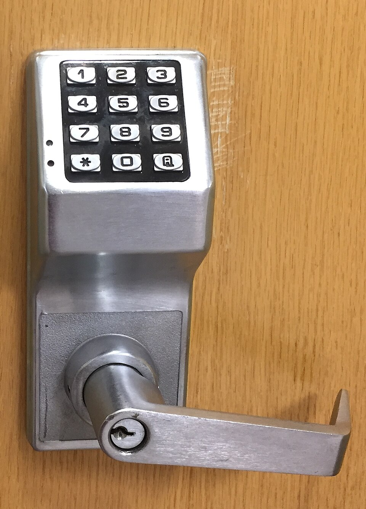
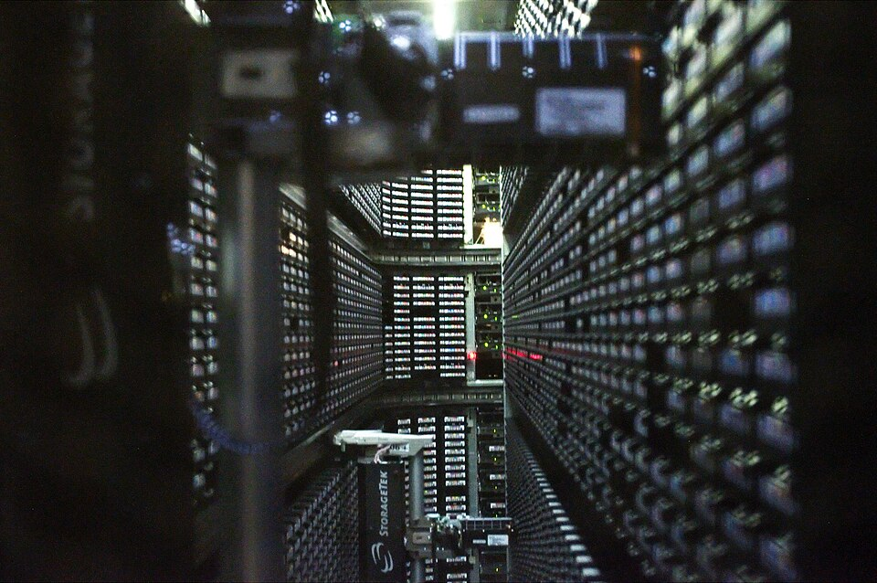

IndigoBunting
IndigoBunting
Good morning!
Nur das Schöne wird die Welt retten!
Fjodor Dostojewski
Nicht verzagen, Doc Alvers fragen!
Informatik — Grundkurs 11
Datensicherheit mit System
Baulich, technisch, organisatorisch, personell — und ein Backup, das im Ernstfall trägt
Nicht verzagen, Doc Alvers fragen!
Kapitel 01
Vier Gruppen
Baulich, technisch, organisatorisch, personell
Nicht verzagen, Doc Alvers fragen!
Wo wir stehen
Letzte Woche: soziale Netzwerke — was ihr selbst für eure Daten tun könnt
Heute der Blick einer Organisation: Schule, Betrieb, Verwaltung
Die Schutzziele kennt ihr schon: Vertraulichkeit, Integrität, Verfügbarkeit
Leitfrage: Was braucht die Schul-IT, damit Daten sicher sind — und reicht dafür Technik?
Nicht verzagen, Doc Alvers fragen!
Vier Gruppen von Maßnahmen
| Gruppe | worum es geht | Beispiele |
|---|---|---|
| baulich | Räume und Gebäude | abschließbarer Serverraum, Brandschutz, Schutz vor Wasser |
| technisch | Geräte und Programme | Updates, Virenschutz, Firewall, Verschlüsselung |
| organisatorisch | Abläufe, Zuständigkeiten | wer Rechte vergibt und entzieht, Backup-Plan |
| personell | Menschen und Rollen | Schulung, Verpflichtung auf Vertraulichkeit, sorgfältige Auswahl |
Die Einteilung hilft, keine Gruppe zu vergessen — Technik ist nur ein Viertel davon
Auch das Ausscheiden gehört dazu: Schlüssel zurück, Konten sperren — eine personelle Maßnahme
Nicht verzagen, Doc Alvers fragen!
Warum Technik allein nicht reicht
Der offene Serverraum entwertet die beste Firewall
Der ungeschulte Mensch öffnet dem Angreifer die Tür — freiwillig
Ohne Regeln bleibt Technik unkoordiniert: Wer spielt Updates ein, wer prüft das Backup?
Deshalb gehören alle vier Gruppen zusammen — die Kette ist so stark wie ihr schwächstes Glied
Nicht verzagen, Doc Alvers fragen!
Menschen und Abläufe
Clean Desk: keine vertraulichen Unterlagen offen liegen lassen, Bildschirm sperren
Das kostet nichts und wirkt sofort — Papier ist ein unterschätzter Weg, auf dem Daten abfließen
Homeoffice: sichere Verbindung, Umgang mit Unterlagen, keine Einsicht durch Dritte
Auch Mitbewohner sind Dritte
Dokumentieren: Nur was aufgeschrieben ist, bleibt nachvollziehbar — auch bei Personalwechsel
Nicht verzagen, Doc Alvers fragen!
Schutzbedarf zuerst
Nicht alle Daten sind gleich schutzbedürftig
Schutzbedarfsfeststellung: Wie schwer wäre der Schaden bei Verlust oder Offenlegung?
Zeugnisnoten und Gesundheitsdaten brauchen mehr Schutz als der Speiseplan der Mensa
Der Schutzbedarf bestimmt den Aufwand — er steht am Anfang jedes Sicherheitskonzepts
Überprüft wird das Konzept regelmäßig und nach jeder größeren Änderung
Nicht verzagen, Doc Alvers fragen!
Kapitel 02
Zutritt, Zugang, Zugriff
Drei Wörter, drei Ebenen

Nicht verzagen, Doc Alvers fragen!
Drei Ebenen — oft verwechselt
| Begriff | betrifft | Frage | Beispiele |
|---|---|---|---|
| Zutritt | Räume | Wer darf den Serverraum betreten? | Schloss, Chipkarte, Besucherliste |
| Zugang | Systeme | Wer darf sich anmelden? | Benutzerkonto, Passwort, zweiter Faktor |
| Zugriff | Daten | Was darf man danach lesen oder ändern? | Berechtigungskonzept, Dateirechte |
Merkhilfe: Zutritt mit den Füßen, Zugang mit dem Login, Zugriff auf die Daten
Ein sauberes Konzept regelt jede Ebene einzeln
Nicht verzagen, Doc Alvers fragen!
Das Berechtigungskonzept
Es legt fest, welche Rolle auf welche Daten zugreifen darf
Rechte hängen an Rollen, nicht an Personen — beim Rollenwechsel ändern sie sich mit
Prinzip der geringsten Rechte: jede Rolle bekommt nur, was ihre Aufgabe erfordert
Beispiel: Eine Lehrkraft trägt Noten nur in ihren eigenen Kursen ein
Wer eine Aufgabe abgibt, verliert auch die Rechte dazu
Nicht verzagen, Doc Alvers fragen!
Adminrechte und getrennte Netze
Ein Programm erbt die Rechte des angemeldeten Kontos
Deshalb: Alltagskonto ohne Adminrechte — sonst läuft Schadsoftware mit vollen Rechten
Netzsegmentierung trennt Bereiche wie Verwaltung, Unterricht und Gäste
Das Gästenetz bringt Besucher ins Internet, aber nicht an interne Systeme
Ein befallenes Gerät kommt so nicht überall hin
Nicht verzagen, Doc Alvers fragen!
Pflege im Alltag
Patch-Management: Updates prüfen, verteilen und dokumentieren — geregelt statt nebenbei
Software-Inventarliste: Schützen kann man nur, wovon man weiß, dass es läuft
Wird eine neue Lücke bekannt, zeigt die Liste sofort, wer betroffen ist
VPN für den Zugriff von außen: ein verschlüsselter Tunnel ins interne Netz
Gegen Schadsoftware auf dem Gerät selbst hilft ein VPN nicht
Nicht verzagen, Doc Alvers fragen!
Kapitel 03
Strom und Backup
Damit Daten verfügbar bleiben

Nicht verzagen, Doc Alvers fragen!
Strom, Hitze, Diebstahl
USV (unterbrechungsfreie Stromversorgung): überbrückt Ausfälle, Server fahren geordnet herunter
Überspannungsschutz bewahrt Geräte vor Spannungsspitzen, zum Beispiel bei Gewitter
Server erzeugen Wärme — Serverräume werden gekühlt und überwacht
Diebstahlschutz: verschlossene Räume, Kabelschlösser, Inventarliste
Laptops mit verschlüsselter Festplatte: Gestohlen ist dann nur das Gerät, nicht die Daten
Nicht verzagen, Doc Alvers fragen!
Die 3-2-1-Regel
| Zahl | Regel | schützt gegen |
|---|---|---|
| 3 | drei Kopien der Daten: das Original und zwei Sicherungen | den Defekt eines Datenträgers |
| 2 | auf zwei verschiedenen Medien | Fehler, die einen ganzen Medientyp treffen |
| 1 | eine Kopie außer Haus | Feuer, Wasser, Diebstahl |
Gegen Ransomware hilft nur eine Kopie, die getrennt aufbewahrt wird
Dauerhaft verbundene Sicherungen werden einfach mitverschlüsselt
Nicht verzagen, Doc Alvers fragen!
Drei Arten zu sichern
| Art | was gesichert wird | Vorteil | Nachteil |
|---|---|---|---|
| Vollsicherung | jedes Mal alles | einfach wiederherzustellen | viel Zeit und Speicher |
| differenziell | alles seit der letzten Vollsicherung | Voll plus letzte genügen | wächst bis zur nächsten Vollsicherung |
| inkrementell | alles seit der letzten Sicherung | schnell, wenig Speicher | braucht die ganze Kette |
Ein Backup zählt erst, wenn die Wiederherstellung getestet ist
Der Sicherungsplan — was, wie oft, wohin, wer prüft — ist eine organisatorische Maßnahme
Nicht verzagen, Doc Alvers fragen!
Fallbeispiel Schul-IT
| Befund | Gruppe | besser so |
|---|---|---|
| Der Serverraum dient als Abstellkammer und steht oft offen | baulich | abschließen, Schlüssel nur für Zuständige |
| Alle Lehrkräfte arbeiten mit Adminrechten | organisatorisch | Alltagskonten ohne Adminrechte |
| Das Backup liegt auf einer USB-Platte neben dem Server | technisch | 3-2-1: eine Kopie außer Haus |
| Niemand weiß, wer die Updates einspielt | organisatorisch | Zuständigkeit festlegen, Patch-Plan |
| Das WLAN-Passwort hängt am Schwarzen Brett | personell | schulen, Gästenetz einrichten |
Jeder Befund passt zu einer Gruppe — manche berühren auch zwei
Nicht verzagen, Doc Alvers fragen!
Der erste Schritt bei knappen Mitteln
Die häufigsten Schäden entstehen an drei Stellen: Updates, Sicherungen, Rechte
Diese drei in Ordnung zu bringen kostet vor allem Sorgfalt, nicht Geld
Teure Technik ohne diese Grundlagen verpufft
Danach: Schutzbedarf feststellen, Konzept aufschreiben, regelmäßig prüfen
Nicht verzagen, Doc Alvers fragen!
Datensicherheit braucht alle vier Gruppen — baulich, technisch, organisatorisch, personell. Zutritt, Zugang und Zugriff werden getrennt geregelt, und das Backup folgt der 3-2-1-Regel.
Merksatz
Nicht verzagen, Doc Alvers fragen!
Fun Facts
1998 löschte bei Pixar ein Befehl große Teile von Toy Story 2 — die Sicherung war unbrauchbar, gerettet hat den Film die Kopie einer Mitarbeiterin im Homeoffice
Im März 2021 brannte in Straßburg ein Rechenzentrum von OVHcloud ab — wer keine Kopie außer Haus hatte, verlor Daten
Der 31. März ist der World Backup Day — der Tag vor dem 1. April
Die 3-2-1-Regel wird dem Fotografen Peter Krogh zugeschrieben
Nicht verzagen, Doc Alvers fragen!
Eure Aufgabe
Kategorisierungsübung: Maßnahmenkarten den vier Gruppen zuordnen
Fallbeispiel Schul-IT in Gruppen: Schwachstellen finden, Gruppe bestimmen, Maßnahme vorschlagen
Backup-Strategien vergleichen: Wie sichert ihr eure eigenen Daten — erfüllt das die 3-2-1-Regel?
Zum Schluss: Aufgaben (20) auf der Planseite — Lösung pro Aufgabe zum Aufklappen
Nicht verzagen, Doc Alvers fragen!